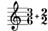

| [Top][Contents] |
Other regression tests
| [ << Top ] | [Top][Contents] | [ >> ] |
| [ < Top ] | [ Up: Top ] | [ > ] |
Introduction
This document presents regression tests for LilyPond development that don’t have visually significant output; it mainly exists for completeness and to make the test documentation better available.
In the web version of this document, you can click on the figure for each example to see the corresponding input file.
| [ << ] | [Top][Contents] | [ >> ] |
| [ < ] | [ Up: Top ] | [ alternative-trailing-var-simultaneous.ly > ] |
Regression test cases
| [ << ] | [Top][Contents] | [ >> ] |
| [ < ] | [ alternative-var-simultaneous.ly > ] |
alternative-trailing-var-simultaneous.ly
It is an error to use \alternative \var following the body
of a repeat when var holds any type of music other than sequential music
(in this case, simultaneous music).
| [ << ] | [Top][Contents] | [ >> ] |
| [ < alternative-trailing-var-simultaneous.ly ] | [ bar-check-synchronize.ly > ] |
alternative-var-simultaneous.ly
It is an error to use \alternative \var when var
holds any type of music other than sequential music (in this case, simultaneous
music).
![[image of music]](e8/lily-eb30dee5.png)
| [ << ] | [Top][Contents] | [ >> ] |
| [ < alternative-var-simultaneous.ly ] | [ base-moment.ly > ] |
bar-check-synchronize.ly
Setting the deprecated context property barCheckSynchronize
triggers a warning.
![[image of music]](04/lily-b9df1734.png)
| [ << ] | [Top][Contents] | [ >> ] |
| [ < bar-check-synchronize.ly ] | [ beam-exceptions-alternating.ly > ] |
base-moment.ly
The deprecated context property baseMoment accesses the
value of beatBase.
![[image of music]](62/lily-514988c0.png)
| [ << ] | [Top][Contents] | [ >> ] |
| [ < base-moment.ly ] | [ beam-exceptions.ly > ] |
beam-exceptions-alternating.ly
This is a set of tests of the beam-exceptions Scheme
function for strictly alternating time signatures. Problems are reported in the
standard error stream.
![[image of music]](36/lily-7a74ce7b.png)
| [ << ] | [Top][Contents] | [ >> ] |
| [ < beam-exceptions-alternating.ly ] | [ beat-base-alternating.ly > ] |
beam-exceptions.ly
This is a set of tests of the beam-exceptions Scheme
function for single-fraction time signatures. Problems are reported in the
standard error stream.
![[image of music]](51/lily-7ea8ef46.png)
| [ << ] | [Top][Contents] | [ >> ] |
| [ < beam-exceptions.ly ] | [ beat-base.ly > ] |
beat-base-alternating.ly
This is a set of tests of the beat-base Scheme function for
strictly alternating time signatures. Problems are reported in the standard
error stream.
![[image of music]](93/lily-40e0be0c.png)
| [ << ] | [Top][Contents] | [ >> ] |
| [ < beat-base-alternating.ly ] | [ beat-structure-alternating.ly > ] |
beat-base.ly
This is a set of tests of the beat-base Scheme function for
single-fraction time signatures. Problems are reported in the standard error
stream.
![[image of music]](9a/lily-c930b759.png)
| [ << ] | [Top][Contents] | [ >> ] |
| [ < beat-base.ly ] | [ beat-structure-senza-misura.ly > ] |
beat-structure-alternating.ly
This is a set of tests of the beat-structure Scheme function
for strictly alternating signatures. Problems are reported in the standard
error stream.
![[image of music]](fa/lily-4a726506.png)
| [ << ] | [Top][Contents] | [ >> ] |
| [ < beat-structure-alternating.ly ] | [ beat-structure.ly > ] |
beat-structure-senza-misura.ly
This is a set of tests of the beat-structure Scheme
function. This set includes cases where the time signature is #f
(for senza misura). Problems are reported in the standard error stream.
![[image of music]](69/lily-5e3e7088.png)
| [ << ] | [Top][Contents] | [ >> ] |
| [ < beat-structure-senza-misura.ly ] | [ binary-search.ly > ] |
beat-structure.ly
This is a set of tests of the beat-structure Scheme function
for single-fraction time signatures. Problems are reported in the standard
error stream.
![[image of music]](c2/lily-689e6f41.png)
| [ << ] | [Top][Contents] | [ >> ] |
| [ < beat-structure.ly ] | [ bookmark-encoding.ly > ] |
binary-search.ly
The binary-search function works as documented.
![[image of music]](92/lily-41963da6.png)
| [ << ] | [Top][Contents] | [ >> ] |
| [ < binary-search.ly ] | [ calc-measure-length.ly > ] |
bookmark-encoding.ly
PDF bookmarks can contain UTF-8 characters. They are correctly rendered in PDF viewers.
Note: due to the way the regression test infrastructure currently works, any breakage in this test will not be noticed automatically.
| [ << ] | [Top][Contents] | [ >> ] |
| [ < bookmark-encoding.ly ] | [ calc-submeasure-structure-alternating.ly > ] |
calc-measure-length.ly
This is a set of tests of the calc-measure-length Scheme
function. Problems are reported in the standard error stream.
![[image of music]](bd/lily-bf306f66.png)
| [ << ] | [Top][Contents] | [ >> ] |
| [ < calc-measure-length.ly ] | [ calc-submeasure-structure.ly > ] |
calc-submeasure-structure-alternating.ly
This is a set of tests of the calc-submeasure-structure
Scheme function for strictly alternating signatures. Problems are reported in
the standard error stream.
![[image of music]](b4/lily-44cc3f45.png)
| [ << ] | [Top][Contents] | [ >> ] |
| [ < calc-submeasure-structure-alternating.ly ] | [ calculate-compound-beat-base.ly > ] |
calc-submeasure-structure.ly
This is a set of tests of the calc-submeasure-structure
Scheme function for single-fraction time signatures. Problems are reported in
the standard error stream.
![[image of music]](8d/lily-653a9ac2.png)
| [ << ] | [Top][Contents] | [ >> ] |
| [ < calc-submeasure-structure.ly ] | [ calculate-compound-beat-grouping.ly > ] |
calculate-compound-beat-base.ly
Calling deprecated functions
calculate-compound-beat-base and
calculate-compound-beat-base-as-moment triggers warnings.
![[image of music]](da/lily-638e9a17.png)
| [ << ] | [Top][Contents] | [ >> ] |
| [ < calculate-compound-beat-base.ly ] | [ calculate-compound-measure-length.ly > ] |
calculate-compound-beat-grouping.ly
Calling the deprecated function
calculate-compound-beat-grouping triggers a warning.
![[image of music]](b7/lily-50d56528.png)
| [ << ] | [Top][Contents] | [ >> ] |
| [ < calculate-compound-beat-grouping.ly ] | [ completion-unit-as-moment.ly > ] |
calculate-compound-measure-length.ly
Calling deprecated functions
calculate-compound-measure-length and
calculate-compound-measure-length-as-moment triggers warnings.
![[image of music]](71/lily-7b72d28c.png)
| [ << ] | [Top][Contents] | [ >> ] |
| [ < calculate-compound-measure-length.ly ] | [ context-property-check.ly > ] |
completion-unit-as-moment.ly
The deprecated context property completionUnitAsMoment
accesses the value of completionUnit.
![[image of music]](f4/lily-ba6619fc.png)
| [ << ] | [Top][Contents] | [ >> ] |
| [ < completion-unit-as-moment.ly ] | [ deprecation-warning.ly > ] |
context-property-check.ly
This test covers \contextPropertyCheck. It should run with
expected warnings. The visual output is not important.
| [ << ] | [Top][Contents] | [ >> ] |
| [ < context-property-check.ly ] | [ display-lily-tests.ly > ] |
deprecation-warning.ly
Scheme function ly:deprecation-warning prints a given
message the first time only. Duplicate messages are recognized by the
formatted message, not by the format string alone.
![[image of music]](95/lily-a98bdc72.png)
| [ << ] | [Top][Contents] | [ >> ] |
| [ < deprecation-warning.ly ] | [ display-scheme-with-partial-markup.ly > ] |
display-lily-tests.ly
This is a test of the display-lily-music unit. Problems are reported on the stderr of this run.
![[image of music]](b9/lily-59d6b3c4.png)
| [ << ] | [Top][Contents] | [ >> ] |
| [ < display-lily-tests.ly ] | [ embed-source-code-include-multiple-times.ly > ] |
display-scheme-with-partial-markup.ly
Using \displayScheme with a partial markup should not crash.
![[image of music]](a2/lily-95817c58.png)
| [ << ] | [Top][Contents] | [ >> ] |
| [ < display-scheme-with-partial-markup.ly ] | [ embed-source-code-order.ly > ] |
embed-source-code-include-multiple-times.ly
With the -dembed-source-code option, a file included multiple times is only embedded once.
Note: with the current regression testing infrastructure,
any breakage of this test will not be noticed in
make check.
![[image of music]](3b/lily-766e4ebe.png)
| [ << ] | [Top][Contents] | [ >> ] |
| [ < embed-source-code-include-multiple-times.ly ] | [ embed-source-code.ly > ] |
embed-source-code-order.ly
When using the -dembed-source-code option, embedded files are displayed in alphabetical order.
Note: with the current regression testing infrastructure,
any breakage of this test will not be noticed in
make check.
![[image of music]](c0/lily-5b3d0c13.png)
| [ << ] | [Top][Contents] | [ >> ] |
| [ < embed-source-code-order.ly ] | [ engraver-order.ly > ] |
embed-source-code.ly
-dembed-source-code embeds source files
in PDFs, including include files, images and verbatim files.
Note: with the current regression testing infrastructure,
any breakage of this test will not be noticed in
make check.
| [ << ] | [Top][Contents] | [ >> ] |
| [ < embed-source-code.ly ] | [ get-deprecated-property-special-warning.ly > ] |
engraver-order.ly
Engravers are run in the same order as they are specified (although it is generally preferred that the order does not matter).
This tests contains several scores, which output “Engraver 1 ran” and “Engraver 2 ran” in the log file. The order between these two lines in each score is what matters.
| [ << ] | [Top][Contents] | [ >> ] |
| [ < engraver-order.ly ] | [ grace-start-and-length.ly > ] |
get-deprecated-property-special-warning.ly
Getting a deprecated property may issue a special warning.
![[image of music]](b7/lily-3ef4eed5.png)
| [ << ] | [Top][Contents] | [ >> ] |
| [ < get-deprecated-property-special-warning.ly ] | [ gregorian-deprecation.ly > ] |
grace-start-and-length.ly
This tests the calculation of music start and length for various kinds of grace music. Problems are reported on stderr.
![[image of music]](d6/lily-2777d426.png)
| [ << ] | [Top][Contents] | [ >> ] |
| [ < grace-start-and-length.ly ] | [ grid-interval-as-moment.ly > ] |
gregorian-deprecation.ly
Including the deprecated file gregorian.ly triggers a warning.
| [ << ] | [Top][Contents] | [ >> ] |
| [ < gregorian-deprecation.ly ] | [ grob-array-list.ly > ] |
grid-interval-as-moment.ly
The deprecated context property gridIntervalAsMoment
accesses the value of gridInterval.
![[image of music]](dd/lily-72c69684.png)
| [ << ] | [Top][Contents] | [ >> ] |
| [ < grid-interval-as-moment.ly ] | [ lilypond-version-outdated.ly > ] |
grob-array-list.ly
Conversions are possible between grob arrays and grob lists.
| [ << ] | [Top][Contents] | [ >> ] |
| [ < grob-array-list.ly ] | [ lookup-module-variable.ly > ] |
lilypond-version-outdated.ly
Test for versions considered outdated or not
(used when suggesting convert-ly).
![[image of music]](1a/lily-40f1f47e.png)
| [ << ] | [Top][Contents] | [ >> ] |
| [ < lilypond-version-outdated.ly ] | [ markup-to-string.ly > ] |
lookup-module-variable.ly
Scoped variable references beginning with the name of a module perform module lookups until a non-module is found, then drop into alist lookups. Problems are reported in the standard error stream.
![[image of music]](f3/lily-9468fa5d.png)
| [ << ] | [Top][Contents] | [ >> ] |
| [ < lookup-module-variable.ly ] | [ markup-with-relative-dir.ly > ] |
markup-to-string.ly
markup->string takes a markup and tries
to convert it into an approximate string representation.
![[image of music]](12/lily-dcf23df7.png)
| [ << ] | [Top][Contents] | [ >> ] |
| [ < markup-to-string.ly ] | [ measure-length-as-moment.ly > ] |
markup-with-relative-dir.ly
The function \withRelativeDir helps
\markup find input files relative to the input file, without
using lilypond’s command line option -I.
To actually test this, lilypond should be called from
another directory, for example
lilypond other/markup-with-relative-dir.ly
Note: with the current regression testing infrastructure it is not possible to check whether the command actually does its job.
| [ << ] | [Top][Contents] | [ >> ] |
| [ < markup-with-relative-dir.ly ] | [ minimum-repeat-length-for-page-turn.ly > ] |
measure-length-as-moment.ly
The deprecated context property
measureLengthAsMoment accesses the value of
measureLength.
| [ << ] | [Top][Contents] | [ >> ] |
| [ < measure-length-as-moment.ly ] | [ moment-mod.ly > ] |
minimum-repeat-length-for-page-turn.ly
The deprecated context property
minimumRepeatLengthForPageTurn accesses the value of
pageTurnMinimumRepeatLength.
![[image of music]](aa/lily-f8885f18.png)
| [ << ] | [Top][Contents] | [ >> ] |
| [ < minimum-repeat-length-for-page-turn.ly ] | [ number-to-duration.ly > ] |
moment-mod.ly
Calling the deprecated function ly:moment-mod triggers a
warning.
![[image of music]](f4/lily-3e75a0fb.png)
| [ << ] | [Top][Contents] | [ >> ] |
| [ < moment-mod.ly ] | [ override-non-existent-property.ly > ] |
number-to-duration.ly
This tests the internal function ly:number->duration.
Problems are reported on stderr.
![[image of music]](89/lily-c65bc02d.png)
| [ << ] | [Top][Contents] | [ >> ] |
| [ < number-to-duration.ly ] | [ override-property-wrong-type.ly > ] |
override-non-existent-property.ly
\override warns and rejects the assignment
if the property does not exist.
| [ << ] | [Top][Contents] | [ >> ] |
| [ < override-non-existent-property.ly ] | [ page-turn-minimum-rest-length.ly > ] |
override-property-wrong-type.ly
\override warns and rejects the assignment
if the value does not match the property’s type predicate.
![[image of music]](5c/lily-f0d9c724.png)
| [ << ] | [Top][Contents] | [ >> ] |
| [ < override-property-wrong-type.ly ] | [ parser-define-once.ly > ] |
page-turn-minimum-rest-length.ly
The deprecated context property minimumPageTurnLength
accesses the value of pageTurnMinimumRestLength.
![[image of music]](22/lily-feed6c9e.png)
| [ << ] | [Top][Contents] | [ >> ] |
| [ < page-turn-minimum-rest-length.ly ] | [ parser-lookup.ly > ] |
parser-define-once.ly
This is a set of tests of the Scheme function
ly:parser-define-once!. Problems are reported in the standard error
stream.
![[image of music]](1d/lily-20b511d0.png)
| [ << ] | [Top][Contents] | [ >> ] |
| [ < parser-define-once.ly ] | [ proportional-notation-duration-as-moment.ly > ] |
parser-lookup.ly
This is a set of tests of the Scheme function
ly:parser-lookup. Problems are reported in the standard error stream.
![[image of music]](12/lily-955a16b4.png)
| [ << ] | [Top][Contents] | [ >> ] |
| [ < parser-lookup.ly ] | [ regex.ly > ] |
proportional-notation-duration-as-moment.ly
The deprecated context property
proportionalNotationDurationAsMoment accesses the value of
proportionalNotationDuration.
| [ << ] | [Top][Contents] | [ >> ] |
| [ < proportional-notation-duration-as-moment.ly ] | [ repeat-start-and-length-no-alternatives.ly > ] |
regex.ly
Test the behavior of regular expression functions.
![[image of music]](d4/lily-9f151dcf.png)
| [ << ] | [Top][Contents] | [ >> ] |
| [ < regex.ly ] | [ repeat-start-and-length-with-alternatives.ly > ] |
repeat-start-and-length-no-alternatives.ly
This tests the calculation of music start and length for various kinds of repeated music without alternatives. Problems are reported on stderr.
![[image of music]](89/lily-d14e8400.png)
| [ << ] | [Top][Contents] | [ >> ] |
| [ < repeat-start-and-length-no-alternatives.ly ] | [ rhythmic-location-dead-grob.ly > ] |
repeat-start-and-length-with-alternatives.ly
This tests the calculation of music start and length for various kinds of repeated music with alternatives. Problems are reported on stderr.
![[image of music]](9a/lily-71080bfa.png)
| [ << ] | [Top][Contents] | [ >> ] |
| [ < repeat-start-and-length-with-alternatives.ly ] | [ scheme-error-locations-include-files.ly > ] |
rhythmic-location-dead-grob.ly
grob::when and grob::rhythmic-location also work on
dead grobs.
| [ << ] | [Top][Contents] | [ >> ] |
| [ < rhythmic-location-dead-grob.ly ] | [ scheme-error-locations-included-string.ly > ] |
scheme-error-locations-include-files.ly
In -dcompile-scheme-code mode, source locations
are printed for Scheme errors, even if the faulty Scheme code
is in an include file.
![[image of music]](6a/lily-1f94fdb2.png)
| [ << ] | [Top][Contents] | [ >> ] |
| [ < scheme-error-locations-include-files.ly ] | [ scheme-error-locations.ly > ] |
scheme-error-locations-included-string.ly
-dcompile-scheme-code also works with
expressions included by ly:parser-include-string
and ly:parser-parse-string. This test should print
two Scheme errors. (However, providing error messages that
point to the precise form that fails is not currently
implemented for included strings of code.)
![[image of music]](17/lily-f9460962.png)
| [ << ] | [Top][Contents] | [ >> ] |
| [ < scheme-error-locations-included-string.ly ] | [ set-deprecated-property-special-warning.ly > ] |
scheme-error-locations.ly
When using the -dcompile-scheme-code option,
Scheme errors point at the precise form where the error occurs
(this is limited by the precision of the information Guile provides).
![[image of music]](ce/lily-9b415503.png)
| [ << ] | [Top][Contents] | [ >> ] |
| [ < scheme-error-locations.ly ] | [ set-deprecated-property-wrong-type.ly > ] |
set-deprecated-property-special-warning.ly
Setting a deprecated property may issue a special warning.
![[image of music]](78/lily-bbc7e52e.png)
| [ << ] | [Top][Contents] | [ >> ] |
| [ < set-deprecated-property-special-warning.ly ] | [ set-non-existent-property-scheme.ly > ] |
set-deprecated-property-wrong-type.ly
\set warns and refuses to assign a value that does not
match a deprecated property’s type predicate.
![[image of music]](d1/lily-6db4b470.png)
| [ << ] | [Top][Contents] | [ >> ] |
| [ < set-deprecated-property-wrong-type.ly ] | [ set-non-existent-property.ly > ] |
set-non-existent-property-scheme.ly
ly:context-set-property! warns if the property does not
exist.
![[image of music]](0f/lily-eba5efd5.png)
| [ << ] | [Top][Contents] | [ >> ] |
| [ < set-non-existent-property-scheme.ly ] | [ set-property-wrong-type.ly > ] |
set-non-existent-property.ly
\set warns and rejects the assignment
if the property does not exist.
| [ << ] | [Top][Contents] | [ >> ] |
| [ < set-non-existent-property.ly ] | [ start-and-length.ly > ] |
set-property-wrong-type.ly
\set warns and rejects the assignment
if the value does not match the property’s type predicate.
![[image of music]](9d/lily-98ef3d1e.png)
| [ << ] | [Top][Contents] | [ >> ] |
| [ < set-property-wrong-type.ly ] | [ suggest-convert-ly.ly > ] |
start-and-length.ly
This tests the calculation of music start and length for various kinds of music. Problems are reported on stderr.
![[image of music]](77/lily-b7d63f55.png)
| [ << ] | [Top][Contents] | [ >> ] |
| [ < start-and-length.ly ] | [ syntax-function-curried.ly > ] |
suggest-convert-ly.ly
When the file’s version statement is outdated
and compilation fails, a message is printed to encourage use
of convert-ly.
![[image of music]](53/lily-f2c051f6.png)
| [ << ] | [Top][Contents] | [ >> ] |
| [ < suggest-convert-ly.ly ] | [ syntax-function-docstring.ly > ] |
syntax-function-curried.ly
Syntax functions can use curried definitions.
![[image of music]](6a/lily-77278528.png)
| [ << ] | [Top][Contents] | [ >> ] |
| [ < syntax-function-curried.ly ] | [ syntax-function-rest.ly > ] |
syntax-function-docstring.ly
Syntax functions’ docstrings are preserved (mainly for the sake of doc autogeneration).
![[image of music]](ed/lily-ab85a3ba.png)
| [ << ] | [Top][Contents] | [ >> ] |
| [ < syntax-function-docstring.ly ] | [ tempo-wholes-per-minute-as-moment.ly > ] |
syntax-function-rest.ly
Syntax functions can use rest arguments.
![[image of music]](28/lily-3a0825df.png)
| [ << ] | [Top][Contents] | [ >> ] |
| [ < syntax-function-rest.ly ] | [ time-signature-fraction.ly > ] |
tempo-wholes-per-minute-as-moment.ly
The deprecated context property tempoWholesPerMinuteAsMoment
accesses the value of tempoWholesPerMinute.
![[image of music]](64/lily-93155e75.png)
| [ << ] | [Top][Contents] | [ >> ] |
| [ < tempo-wholes-per-minute-as-moment.ly ] | [ time-signature-to-fraction.ly > ] |
time-signature-fraction.ly
The deprecated context property timeSignatureFraction
accesses the value of timeSignature.

| [ << ] | [Top][Contents] | [ >> ] |
| [ < time-signature-fraction.ly ] | [ translator-duplicate.ly > ] |
time-signature-to-fraction.ly
This is a set of tests of the time-signature->fraction
Scheme function. Problems are reported in the standard error stream.
![[image of music]](16/lily-c880607f.png)
| [ << ] | [Top][Contents] | [ >> ] |
| [ < time-signature-to-fraction.ly ] | [ tsig-abbr-expand.ly > ] |
translator-duplicate.ly
Only one instance of a translator can exist in a context. Duplicates are eliminated.
| [ << ] | [Top][Contents] | [ >> ] |
| [ < translator-duplicate.ly ] | [ tuplet-spanner-duration-as-moment.ly > ] |
tsig-abbr-expand.ly
This tests the internal function tsig-abbr-expand. Problems are reported on stderr.
![[image of music]](3c/lily-db9ffd4b.png)
| [ << ] | [Top][Contents] | [ >> ] |
| [ < tsig-abbr-expand.ly ] | [ unset-non-existent-property-scheme.ly > ] |
tuplet-spanner-duration-as-moment.ly
The deprecated context property
tupletSpannerDurationAsMoment accesses the value of
tupletSpannerDuration.
![[image of music]](72/lily-11471d95.png)
| [ << ] | [Top][Contents] | [ >> ] |
| [ < tuplet-spanner-duration-as-moment.ly ] | [ unset-non-existent-property.ly > ] |
unset-non-existent-property-scheme.ly
ly:context-unset-property warns if the property does not
exist.
![[image of music]](19/lily-f6efa66c.png)
| [ << ] | [Top][Contents] | [ >> ] |
| [ < unset-non-existent-property-scheme.ly ] | [ unspecified-from-callback.ly > ] |
unset-non-existent-property.ly
\unset warns if the property does not exist.
![[image of music]](88/lily-20a0d15c.png)
| [ << ] | [Top][Contents] | [ >> ] |
| [ < unset-non-existent-property.ly ] | [ version-incomplete-bad.ly > ] |
unspecified-from-callback.ly
Callbacks returning *unspecified* are only
run once, as all callbacks.
| [ << ] | [Top][Contents] | [ >> ] |
| [ < unspecified-from-callback.ly ] | [ version-incomplete-good.ly > ] |
version-incomplete-bad.ly
An incomplete version statement, with the third number omitted, is rejected if the second number is odd.
![[image of music]](a3/lily-71ed621f.png)
| [ << ] | [Top][Contents] | [ >> ] |
| [ < version-incomplete-bad.ly ] | [ version-invalid.ly > ] |
version-incomplete-good.ly
An incomplete version statement, with the third number omitted,
is accepted if the second number is even. This also tests the message
suggesting convert-ly in such cases.
![[image of music]](97/lily-1a0c82aa.png)
| [ << ] | [Top][Contents] | [ >> ] |
| [ < version-incomplete-good.ly ] | [ version-outdated-error.ly > ] |
version-invalid.ly
An invalid \version statement should result in an error
and a nonzero return code.
![[image of music]](c1/lily-bcf1c10c.png)
| [ << ] | [Top][Contents] | [ >> ] |
| [ < version-invalid.ly ] | [ void-function-empty.ly > ] |
version-outdated-error.ly
A \version statement newer than the running
version of LilyPond should result in an error and a nonzero return
code.
![[image of music]](ea/lily-faf4d443.png)
| [ << ] | [Top][Contents] | [ >> ] |
| [ < version-outdated-error.ly ] | [ volta-spanner-duration-as-moment.ly > ] |
void-function-empty.ly
A void function’s body can be empty.
![[image of music]](ab/lily-9a2a8549.png)
| [ << ] | [Top][Contents] | [ >> ] |
| [ < void-function-empty.ly ] | [ > ] |
volta-spanner-duration-as-moment.ly
The deprecated context property voltaSpannerDurationAsMoment
accesses the value of internal property voltaBracketMusicalLength.
![[image of music]](c1/lily-18002006.png)